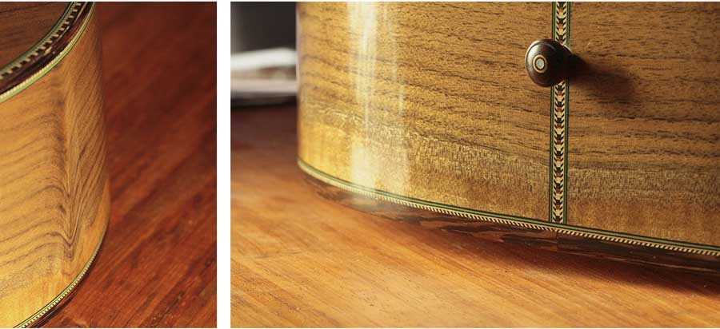

I discovered this piece of padauk wood a couple of years ago and came up with the idea of a 4 piece back with two sapwood stripes. The sapwood is the light coloured wood. It's the wood that grows on the outside surface of the tree. The red heartwood grows on the inside. It took a lot of fiddling around to get the pieces cut just right but I managed to get it almost perfectly symmetrical (did I mention, I like symmetry).
The sapwood turned out to be very dramatic. It has these grey blue blotches which is actually fungi that occasionally occurs in sapwood. It gives the guitar a nice earthy look.
I also managed to find a nice piece of bear claw spruce for the top. It has a rare figure with striations that resemble claw marks. These scars typically run perpendicular to the grain which make the top stiffer producing a superior tone. The bear claw top compliments the padauk sapwood nicely. The combination is stunning.
This is a wild guitar. The sound is crisp and clear and the look is out of this world. I think it's a keeper. It's not for sale.